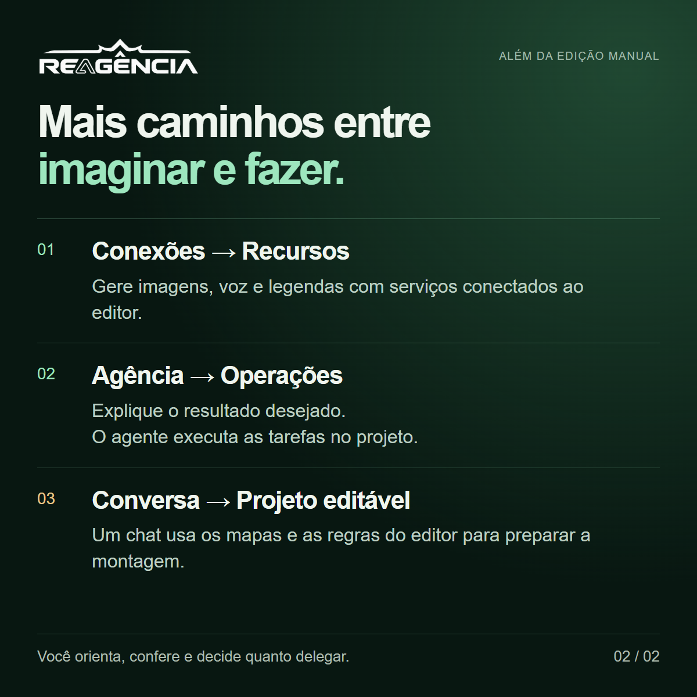

Bloco 1 · Abertura
Fala, galera!
Nos últimos meses desenvolvi o Reagência, um editor de vídeos. Foi meu maior projeto até hoje e uma experiência intensa de desenvolvimento com IA.
Parti de uma estrutura inicial do OpenCut, ainda muito limitada para o que eu queria fazer. Precisei construir e amadurecer recursos fundamentais do editor, como transições, transformações, efeitos e máscaras, além de desenvolver as conexões e a Agência integrada.

Legenda e descrição para acessibilidade
Legenda opcional: Reagência: edição manual e operações por IA no mesmo projeto.
Descrição da imagem: Reagência: um editor de vídeo com edição manual e operações por IA. Captura real mostra a prévia, os recursos e a linha do tempo.
Adaptada da abertura da apresentação; captura real do editor. ↗Bloco 2 · Como funciona
Além da edição manual, o Reagência permite:
• Gerar recursos por conexões: usar serviços conectados para criar imagens, narração e legendas dentro do editor.
• Delegar operações à Agência: explicar o resultado desejado para um agente integrado, que executa as tarefas no projeto. Isso poupa operações repetitivas e a necessidade de dominar cada controle antes de começar.
• Preparar a edição fora do editor: fornecer os materiais, a ideia e os mapas com a estrutura e as regras do Reagência a um chat de IA. Fiz esse teste e recebi um arquivo de projeto que depois abri para conferir, ajustar e exportar normalmente.
A direção criativa continua com o usuário, que escolhe quanto quer fazer à mão e quanto quer delegar.


Legenda e descrição para acessibilidade
Legenda opcional: Conexões, Agência integrada e criação de projetos por conversa.
Descrição da imagem: Três possibilidades além da edição manual: conexões para gerar recursos, Agência para executar pedidos e mapas e regras para preparar um projeto por conversa.
Adaptada da página 3: os diferenciais do Reagência. ↗Bloco 3 · Apresentação e aprendizados
Preparei uma apresentação visual com o funcionamento e exemplos reais dessas possibilidades:
https://romanbrocki.github.io/reagencia-apresentacao/essencial/
Deu um trabalhão e continua em evolução. Além do software, a jornada trouxe três aprendizados que achei interessante compartilhar aqui:
1. A IA foi um acelerador imenso e uma ponte para conhecimentos que eu não tinha.
O Codex, da OpenAI, tornou possível colocar esses conhecimentos em prática. Não foi só uma questão de fazer mais rápido: sem ele, eu não teria conseguido desenvolver esse projeto.
2. Fazer um agente executar tarefas complexas exige mais do que conectar um modelo.
Ele precisa entender as ferramentas, o estado do projeto e os limites da operação. Quanto mais possibilidades, mais difícil foi manter a execução consistente.
3. Trabalhar com IA também é um exercício de gestão.
Dividir tarefas, escolher modelos, organizar contexto e revisar resultados passaram a fazer parte do trabalho. E custo entra nessa conta: um modelo mais barato pode sair caro pelo retrabalho; um mais capaz pode ser desperdício numa tarefa simples. Encontrar esse equilíbrio foi um aprendizado constante.
Se quiserem saber mais, estou à disposição.